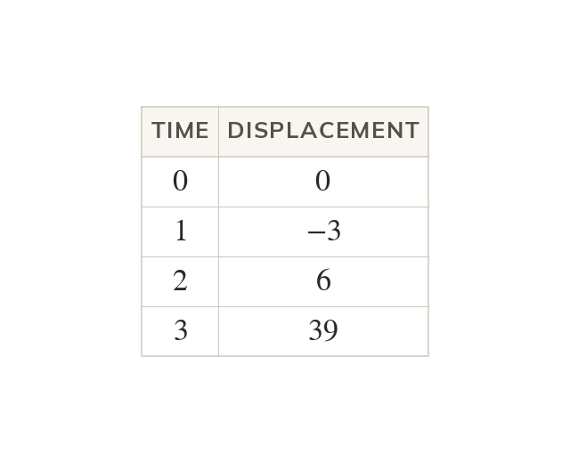
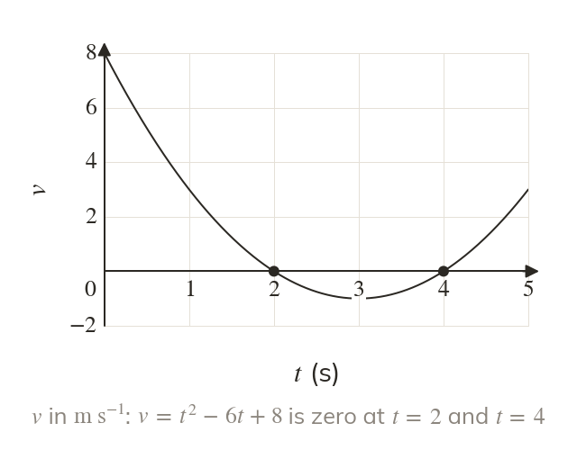
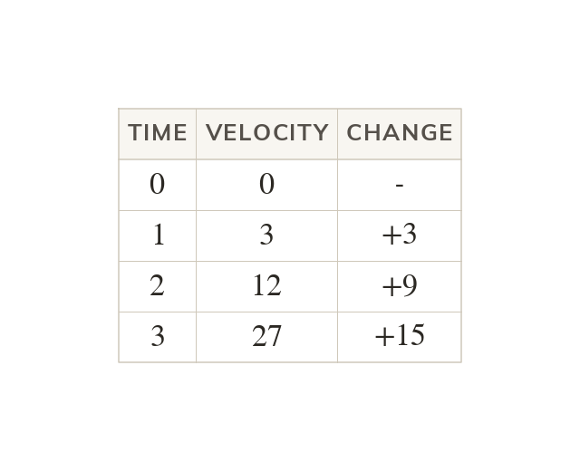
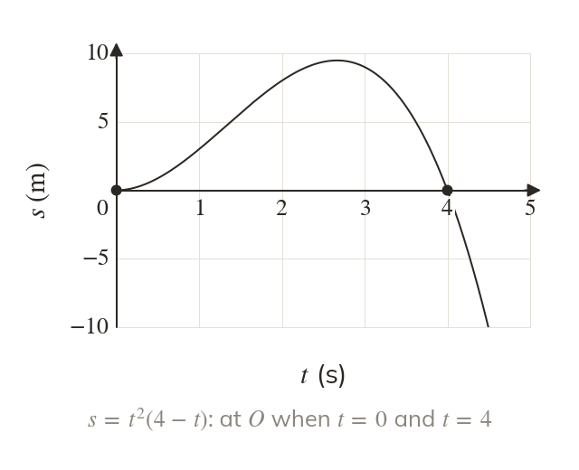
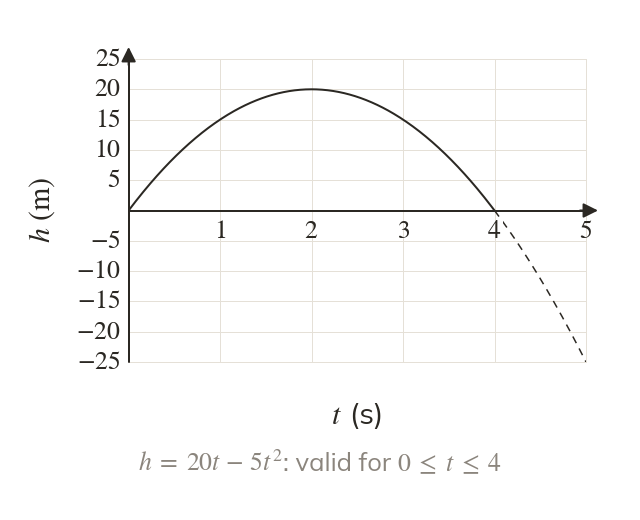

Position as a function of time
When the acceleration varies, s and v are given as functions of t. Substituting a time tells you where the body is then.
Real motion rarely has a constant acceleration, so from now on displacement and velocity can be any function of time. Reading a body's position, its moments at rest and the times its model holds from that function sets up differentiating and integrating it in the next lessons.
Work down the page at your own pace. Write every answer in your book first, then click to check it.
Read each card, then follow the worked examples one step at a time.

When the acceleration varies, s and v are given as functions of t. Substituting a time tells you where the body is then.

A body is at rest at the moments its velocity is zero. It is back at its starting point when its displacement is zero.

The constant acceleration formulae hold only when the velocity changes by the same amount each second. When it does not.
Pick an answer. If it's wrong, the feedback tells you which mistake it was.
Read each card, then follow the worked examples one step at a time.

Factorising s shows the times the body is at , where the graph meets the t-axis. Between those times, the sign of s tells you which side of the body is.

A model holds only for a stated interval of time, such as
Outside it, the function can give values that make no sense, such as a negative height.
Pick an answer. If it's wrong, the feedback tells you which mistake it was.
Finished? Next lesson: M11.2 Using Differentiation.
For each skill, tap the one that is true for you today. Your Revise pages start with anything you mark Not yet.
Your ratings are saved on this device only.
Log in, then search for a code to practise that skill.